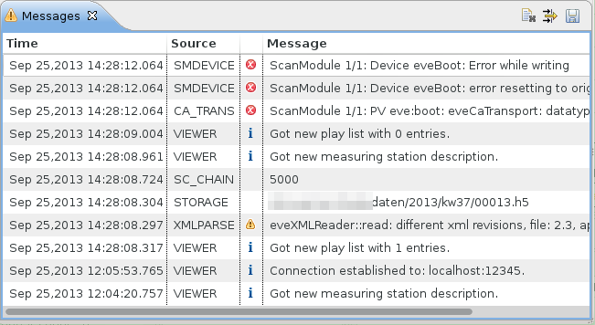
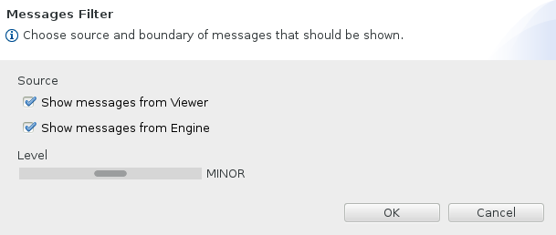

All messages generated from parts in the EveDevice and EveEngine perspectives (including messages send from the Engine) are shown in the Messages view:

Additionally to the date and content the message has a source and severity. The severity levels in ascending order are:
 debug <
debug <  info < warning (minor) <
info < warning (minor) <  error <
error <  fatal
fatal
The toolbar commands allow to clear the list of messages, save them in a text file and adjust filter settings. The filter settings define whether messages of a certain source (i.e. Viewer or Engine) are shown and a threshold (messages with a severity lower than the threshold level are not shown). The following setting defines that only messages of level „warning” and above from each Viewer and Engine should be shown:

Note that although a message is not shown, it is present in the Messages view memory. If later on the filter settings are changed they eventually become visible.